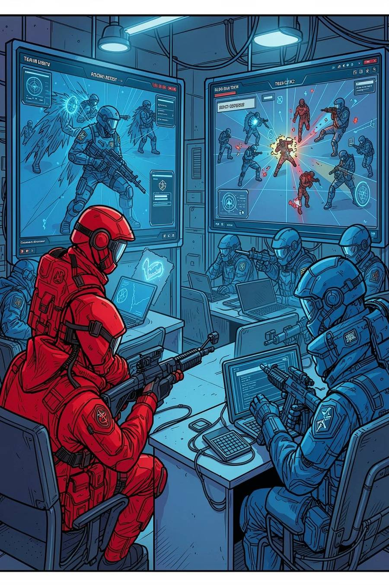

A firing range for the modern battlefield: information. Our Spirent-based cyber range is where security teams hone attack and defense skills — and where network devices prove themselves before real-world deployment.

Keeping information accessible while keeping it secure is a growing global challenge. A cyber range answers it the way a firing range does — skills and equipment, proven before they matter.
A training field for security assessment where teams build attack and defense expertise, verify signatures and rehearse incident response on live infrastructure.
Devices benchmarked against IETF/BMWG standards — RFC 2544 and RFC 2889 — for true capability measurement instead of datasheet claims.
Validate network devices and applications against vendor claims before purchase and deployment decisions are locked in.
Devices tested against the BMWG methodology followed by Cisco, Palo Alto, Fortinet and SonicWall — the same bar the industry leaders use.
Exercises pit a fully equipped red team against a blue team defending production-grade infrastructure — on simulated traffic indistinguishable from the real internet.
Switches and routers tested for throughput, latency, packet loss, address learning and frame forwarding.
QoS/QoE for web infrastructure and Triple Play services — TCP connection rates, HTTP transfer, DoS handling and latency.
Packet-filter firewalls per RFC 3511 and next-generation firewalls per the BMWG draft — including IDS/IPS, DLP and antimalware functions.
HTTP, HTTPS, FTP, DNS and email servers simulated with full protocol stacks and realistic user behavior.

The range generates the traffic of a living internet — business, streaming, gaming, social, P2P — mixed with the attacks that hide inside it.
Visual sequence of every event in an attack — locate, download, study and import attack files (MSL, PCAP) for deeper analysis.
PDF, Word and HTML reports with graphs and charts, plus a RESTful API for custom integrations and automation.
Customized training programs covering network design, performance testing, attack theory and firewall/IPS deployment — with dedicated ongoing support.
A cyber range is to IT security what a firing range is to marksmanship: a safe, realistic environment where security teams practice attack and defense skills and where network devices are tested before real-world deployment. The Visionbotix Cyber Range is built on Spirent test platforms with professional red team and blue team tooling.
Switches and routers (RFC 2544/2889), firewalls and next-generation firewalls (RFC 3511, BMWG), Layer 4–7 applications, application servers, IDS/IPS, DLP and antimalware systems — under realistic simulated internet traffic, attack libraries covering DDoS, XSS, SQL injection, backdoors and protocol fuzzing, and traffic replayed from real local applications.
Yes. We deliver customized training programs covering network design, performance testing, attack theory and firewall/IPS deployment, plus dedicated ongoing support — schedules and plans are agreed with each customer.
From platform design to operator training — we deliver the complete cyber range and stay for the long run.
Discuss a Deployment